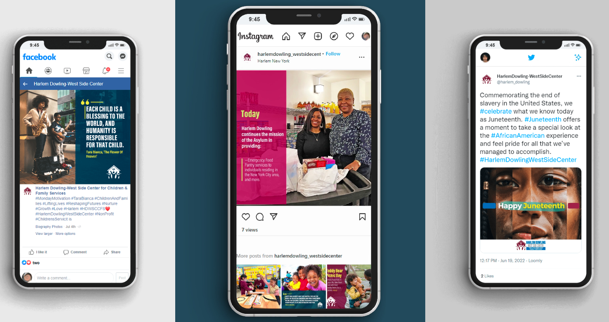

Featured Work

Hi. I’m Francisco, a Front-end Developer with 2 years commercial experience creating WordPress and coded websites for clients all over the US.

I am currently in my final year of studies at UTN University, based in Argentina. In addition to my studies, I also have experience in digital marketing including ads campaign with successful results.
As a developer, I am passionate about delivering the best results to my clients. I take pride in building websites that not only look great but also drive organic traffic and improve online visibility. My expertise lies in creating websites that are not only aesthetically pleasing but also provide an optimal user experience.
I am dedicated to constantly learning and growing my skillset to provide my clients with cutting-edge solutions that can help them achieve their business goals. So, if you're looking for a professional who can help you build a website that stands out and drives results, I am the developer for you!
Responsive websites that optimize the user experience.
Maximize website speed, make it easily discoverable, and user reach.
Utilize the most widely used platform to manage your website.